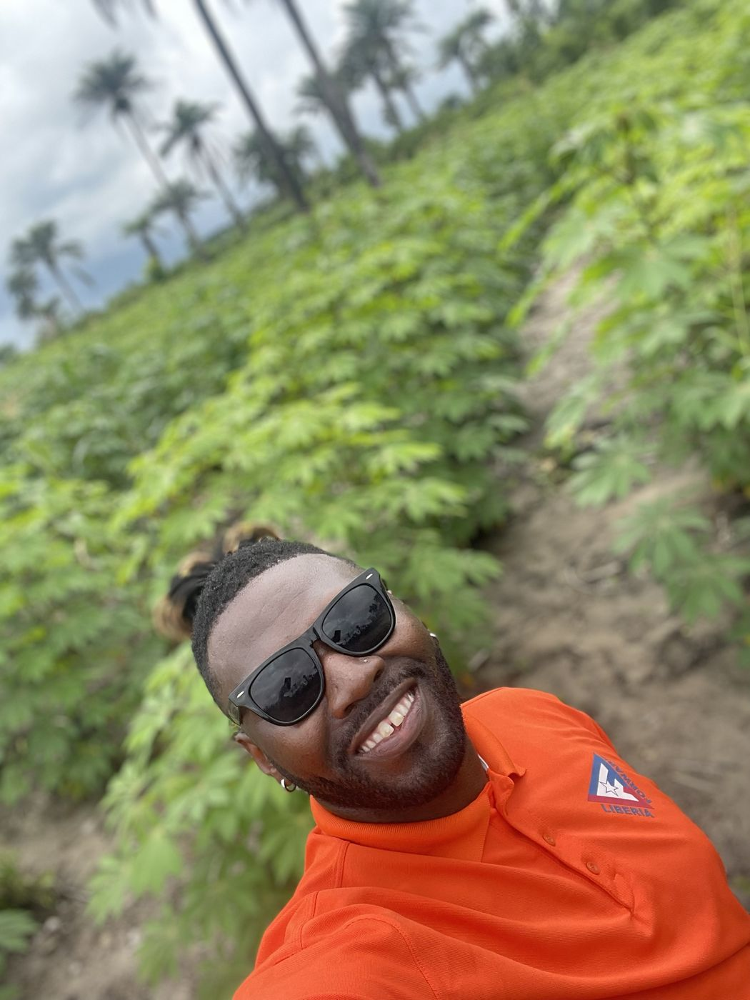
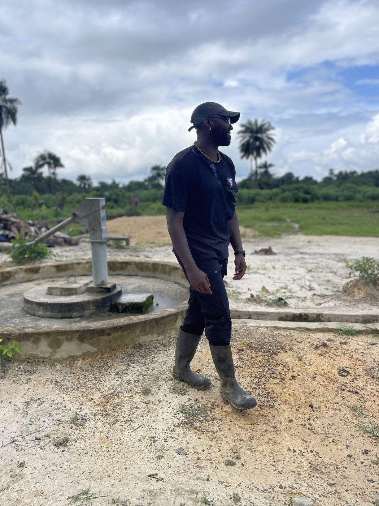
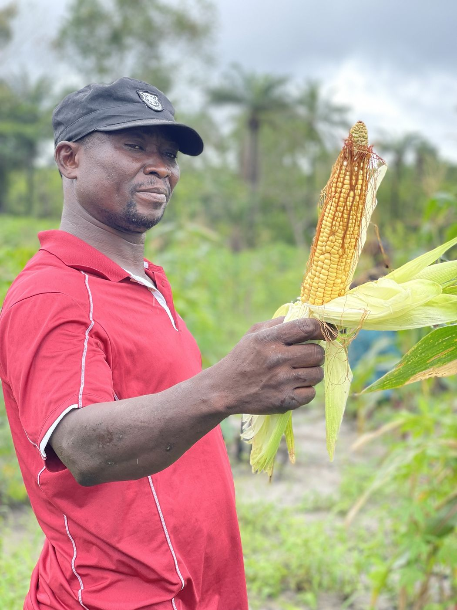
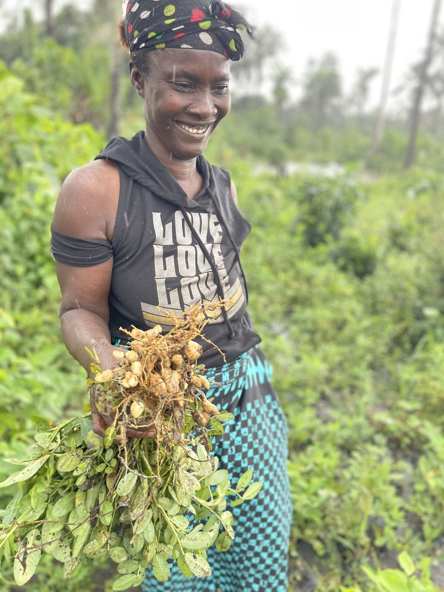

Education, workforce development, civic and historical education, and economic opportunity across Liberia.
Global Education Pathways is our soon-to-launch scholarship and opportunity program for Liberian students. It's an open application, no nominations required and no fees ever, built to create a real profile of each student's academic record, goals, and circumstances so we can match them with real funding and university opportunities at home and abroad.
DEVT is a vocational and technical training institution in Monrovia, founded by Mohammed Foboi. Liberia Forward is a strategic partner and supporter, bringing Starlink connectivity to campus, coordinating donated equipment, and providing financial support.
We're extending that partnership by connecting Liberians and U.S. institutions to deliver online trainings, lectures, and hands-on projects, bridging the diaspora and Liberia gap so knowledge and resources gained abroad build sustainable workforce development at home.
Liberia Forward believes citizens participate more effectively in national development when they understand how government, public institutions, elections, and public finance actually work.
Lion of the Law is our animated civic education platform, powered by Liberia Forward and built to stand on its own. Through storytelling, humor, and West African wisdom, Blama Doe and Kana Doe investigate how Liberia's public systems work, closing each episode with "The Lion's Lesson." Nonpartisan and fact-based, built for schools, embassies, and civic partners ready to bring it to their communities.
We work with Dr. Carl Patrick Burrowes, a Liberian historian, to bring his scholarship to a wider audience.
A great deal of Liberia's documented history sits in academic work that never reaches the people it belongs to. Our role is to help carry it across that distance, in formats Liberians at home and in the diaspora will actually read and share.
Liberia is working to produce its own eggs and fish while importing the protein that feeds them. That gap is where we are putting our agricultural work.
Poultry farmers in Liberia have reported paying between US$100 and US$120 per bag for imported feed, with limited local access to corn, the main feed ingredient. For fish farmers, feed can account for close to half of operating expenses. Over the same period the price of a carton of eggs in Monrovia has climbed from roughly US$50 to US$70, and domestic production has reportedly declined.
Black soldier fly larvae contain roughly 40 to 50 percent protein, with an amino acid profile comparable to fishmeal, and they are raised on organic waste that communities already discard. Research across poultry and tilapia feeding trials has found larvae meal works as a partial substitute for fishmeal while lowering both feed cost and overall cost of production.
Our black soldier fly larvae operation in Margibi County is preparing for launch. It will be our flagship agricultural program, because it addresses the input rather than the output. Animals cannot be raised without feed, and feed is the cost that decides whether a Liberian farm survives.
We treat feed as the first problem, not the last one.




Our farm in Korto Town is where Liberia Forward's agricultural work began. When we started there was no grid electricity, no cell service, no maintained roads, and a water crossing that flooded every rainy season. We cleared the land by hand, hired only local labor, and built the whole process ourselves. We put in wells so the community had clean water too.
We grew cassava, vegetables, and plantain there. We are now transitioning the land to a fruit tree farm: coconut, papaya, mango, and orange. Tree crops take longer to come in than cassava, and they keep producing for decades once they do. For a farm built by hand in a place with no infrastructure, that trade is worth making.
Universities, foundations, businesses, government agencies, and diaspora professionals all engage with these programs in different ways.